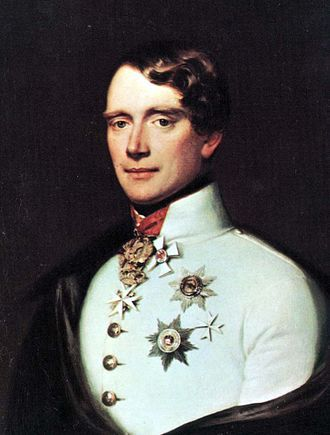
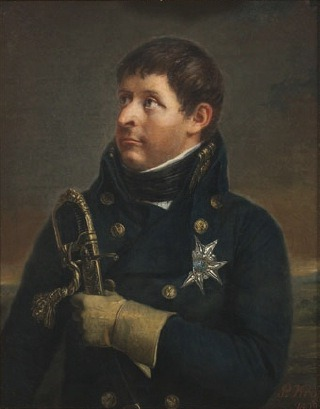
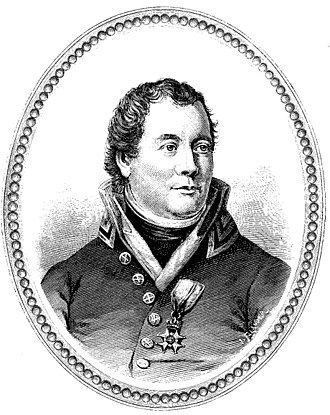
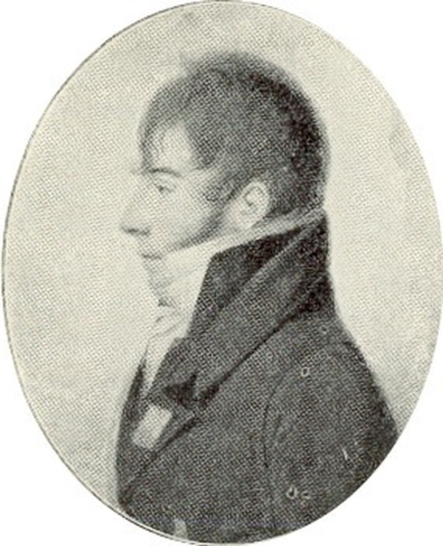
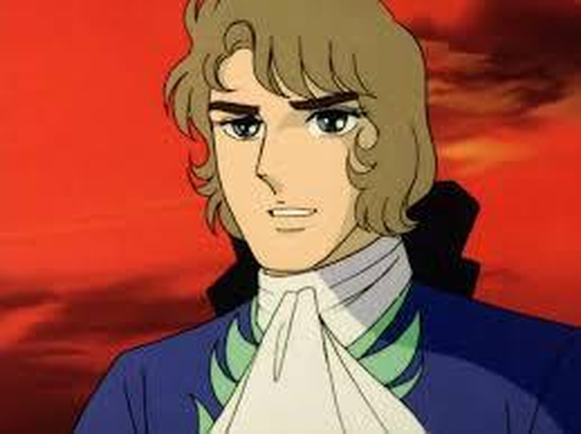
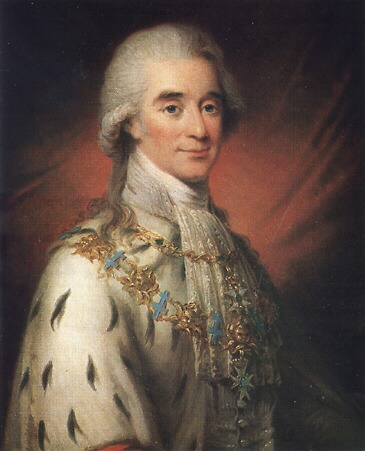
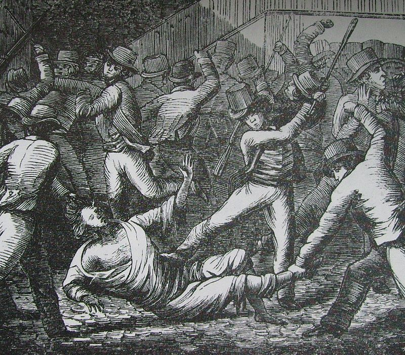

스톡홀름의 프랑스 왕 (8편) - 왕세자와 백작의 죽음
게시: 2018-08-13T06:30:00+09:00
이야기를 다시 1809년 초 스웨덴으로 돌리겠습니다. 구스타프 4세를 쿠데타로 축출하고 카알 13세를 새 국왕으로 새운 스웨덴은 이미 노쇠한 카알 13세의 뒤를 이을 후계자 문제로 갈등이 고조되고 있었습니다. 카알 13세의 아들들은 모두 유아기에 사망했기 때문에 카알 13세가 서거하고 나면 왕가 후손이 끊어질 판이었습니다. 이런 경우가 유럽 왕가에서 드문 일이 아니었고, 보통 제일 가까운 외국 왕가나 외국 귀족의 자제를 데려와 왕으로 삼는 일이 많았습니다. 딱히 불화가 일어날 일은 아니었습니다. 하지만 당시 스웨덴은 새 후계자가 누가 될 것이냐를 놓고 분위기가 심상치 않았습니다. 대체 그 후보자들이 누구누구였길래 이런 갈등이 생겼을까요 ? 아마 베르나도트를 데려오는 것에 대해 반대가 심해서 갈등이 생겼나보다 라고 짐작하실 수 있겠지만, 놀랍게도 베르나도트는 아직 유력한 후보자 명단에도 들지 못했습니다.
문제는 정작 카알 13세의 왕비 샤를로타(Hedvig Elisabet Charlotta)를 비롯한 스웨덴 귀족들 중 상당수가 쫓겨난 구스타프 4세의 아들 구스타프 왕자(Gustaf Gustafsson von Holstein-Gottorp)를 차기 왕세자로 지지하고 있다는 것이었습니다. 이들을 스웨덴에서는 구스타프파(Gustavianerna)라고 불렀는데, 이들은 정확하게는 구스타프 왕자나 그 아버지 구스타프 4세에 대해 충성한다기 보다는, 1792년 암살된 구스타프 3세에 대해 충성하는 사람들이었습니다. 구스타프 왕자는 그의 손자이니, 당연히 그의 핏줄인 구스타프 왕자가 스웨덴 왕세자가 되어야 한다는 입장이었습니다. 카알 13세와 그 왕비 샤를로타에게는 조카 손자였던 구스타프 왕자는 겸손하고 똑똑하여 그의 아버지 구스타프 4세와는 꽤 다른 모습을 보여주었으므로 샤를로타를 비롯한 구스타프파 사람들에게 희망을 주고 있었습니다.

(못난이 구스타프 4세의 아들 구스타프 왕자입니다. 그는 1810년 당시 만 10세의 나이였고, 쿠데타 직후 가택연금 상태에 있었습니다. 나중에 국외로 추방되어 오스트리아에서 Prinz von Wasa, 즉 바사 대공이라는 작위를 받고 원수 직위에도 올랐습니다.)
그러나 구스타프 왕자가 개차반이건 천재이건 쿠데타로 그의 아버지를 쫓아냈던 스웨덴 군부는 그를 왕세자로 세울 생각이 전혀 없었습니다. 당시 스웨덴의 군부와 성직자들과 중산층 시민계급 그리고 농민들, 즉 사실상 스웨덴 전체가 모두 덴마크 공작의 아들이자 노르웨이 총독이었던 크리스티안 아우구스트(Christian August of Schleswig-Holstein-Sonderburg-Augustenborg)을 차기 왕세자로서 지지하고 있었습니다. 이 젊은 덴마크 귀족은 쿠데타를 주동했던 아들러스파르Georg Adlersparre) 장군 등 스웨덴 군부가 끌어들인 인물이었습니다. 스웨덴 군부는 처음엔 당시 덴마크 국왕이었던 프레데릭 6세(Frederick VI)를 차기 스웨덴 왕세자로 추대하려 했습니다. 그러나 당시 나폴레옹의 편에 섰던 프레데릭 6세가 프랑스의 적국인 스웨덴 국왕직을 겸직하는 것에 대해 부담을 느끼고 거절하자, 꿩 대신 닭으로 당시 노르웨이 총독이던 아우구스트를 추대한 것이었습니다. 아우구스트는 꿩 대신 닭 치고는 매우 훌륭한 후보였습니다. 그는 노르웨이를 꽤 잘 통치하고 있어서 노르웨이 국민들로부터 평판이 매우 좋았습니다. 또 바로 최근에 있었던 스웨덴-러시아 간의 핀란드 전쟁에서 프랑스의 동맹이던 덴마크는 당연히 스웨덴의 적국이었는데, 당시 덴마크의 식민지이던 노르웨이는 스웨덴의 위기를 틈타 서쪽에서 스웨덴을 공격할 수도 있었지만 그러지 않았습니다. 그로 인해 아우구스트의 인기는 스웨덴에서도 높았습니다.

(비운의 왕세자였던 칼 아우구스트(Carl August)입니다. 그는 원래 크리스티안 아우구스트였다가 스웨덴 왕세자가 되면서 이름을 칼 아우구스트로 바꿨습니다.)

(아들러스파르Georg Adlersparre) 장군입니다. 자유주의 신봉자였고, 따라서 구스타프파와는 대립 관계에 있었습니다.)
베르나도트의 위치는 어땠느냐고요 ? 그는 정말 어쩌다 우연히 후보에 올랐습니다. 그가 뤼벡에서 친절하게 대해주었던 스웨덴군 포로들의 지휘관이 뫼르너 장군이었는데, 아마도 그의 친척인 듯한 칼 뫼르너(Carl Otto Mörner)라는 20대 후반의 젊은 귀족이 베르나도트를 만나러 왔다가, 대체 무슨 생각에서였는지 자기 멋대로 '당신, 왕이 되고 싶지 않소 ?' 라며 스웨덴 왕세자 자리를 제안한 것입니다. 이 어처구니 없는 행동에 대해 스웨덴 왕가는 뫼르너를 체포함으로써 분노를 표시했습니다. 베르나도트의 이름은 그렇지 않아도 팽팽하던 스웨덴 내의 갈등 관계를 악화시키는 결과만 낳았습니다. 베르나도트도 스웨덴 왕세자 자리에 대해 관심이 있더라는 이야기를 아들러스파르 장군이 샤를로타 왕비에게 전하자 샤를로타 왕비는 구스타프 왕자에 대한 지지를 아들러스파르 장군의 면전에서 표명했고, 아들러스파르 장군도 스웨덴 군부는 그 누구도 구스타프 4세의 아들이 왕위에 오르는 것을 용납하지 않을 것이라며 왕비에게 대드는 등 분위기가 험악해졌던 것입니다.

(칼 뫼르너의 초상입니다. 그가 뤼벡 전투에서 베르나도트에게 은혜를 입은 뫼르너(Carl Carlsson Mörner) 장군과는 무슨 관계였는지는 찾지 못했는데, 아무래도 친척 관계였을 가능성이 매우 높습니다. 이 양반은 젊은 시절 이렇게 저지른 사고의 중요성에 비해, 나중에 크게 중요한 역할을 하지는 않았습니다.)
이런 상황에서는 가장 무난한 후보가 왕세자로 책봉되는 것이 순리였고, 그 적임자는 바로 노르웨이 총독 아우구스트였습니다. 그는 1809년 말 왕세자로 결정되어 이듬해 1월 온 스웨덴 국민들의 환영 속에 스웨덴에 입국했습니다. 물론 구스타프파 귀족들은 그를 눈엣가시처럼 생각하고 있었습니다. 그런 구스타프파의 수장은 바로 명작 만화 '베르사이유의 장미'의 남자 주인공이자 실제로도 마리 앙투와네트와 가까운 친구였던 폰 페르센(Hans Axel von Fersen) 백작이었습니다. 그는 당시 왕국의 총리이자 원수(Marshal of the Realm)으로서 국왕 카알 13세에 이은 왕국 서열 2위의 권력자였습니다. 이런 권력자가 새로 책봉된 왕세자에 대해 '제발 확 죽어버려라'라고 속으로 바라고 있다는 것은 심상치 않은 일이었습니다. 그러나 다들 설마 왕국의 제2인자가 감히 왕세자의 목숨을 노리겠는가 라고 생각했지요.


(폰 페르센 백작입니다. 이 양반이 베르사이유의 장미라는 만화에 나오는 것처럼 미남자였냐고요 ? 예, 그랬던 것 같습니다. 1793년 3월 네덜란드 니어빈든(Neerwinden) 전투 직전에 폰 페르센은 주프랑스 러시아 대사와 함께 프랑스군 사령관 뒤무리에(Charles Dumouriez) 장군을 만났는데, 폰 페르센 백작이 이름을 밝히며 자기 소개를 하자, 두무리에 장군은 '당신의 잘 생긴 얼굴을 보고 당신이 누군지 짐작을 했었어야 했다'라고 말했다고 합니다. 반면에 폰 페르센은 뒤무리에 장군이 전형적인 프랑스인답게 허풍이 심하고 자신감이 가득차 있으며, 똑똑하지만 조심성도 없고 판단력도 없다고 평했습니다.)
그런데 그 일이 일어나고야 말았습니다. 왕국에 들어온지 불과 4달만인 5월 28일 갑자기 아우구스트 왕세자가 죽어버린 것입니다. 그는 부대 사열 중 난데없이 말에서 떨어진 뒤 사망했는데, 부검 결과 그는 갑작스런 뇌졸증에 의해 사망한 것으로 밝혀졌습니다. 그러나 스웨덴 국민들에게는 그런 설명보다는 구스타프파 귀족들이 왕세자를 독살했다는 소문이 훨씬 더 설득력이 있었습니다. 스웨덴 국민들은 분노했습니다. 그리고 그 분노는 이 모든 일의 배후로 의심받던 폰 페르센에게 집중되었습니다.
6월 20일, 아우구스트 왕세자의 국장이 있던 날 스톡홀름 시내의 민중은 술렁거렸습니다. 왕국의 원수였던 폰 페르센이 기마 근위대와 함께 운구 행렬을 선두에서 이끌었는데, 불운했던 왕세자를 추모하기 위해 모인 민중들은 그 모습을 보고 폭발하고 말았습니다. 그가 탄 마차에 처음에는 동전 같은 것들이 날아오더니, 곧 이어 돌맹이가 하나둘씩 날아들었습니다. 곧 우박처럼 쏟아지는 돌팔매 세례에 마차 유리창이 깨졌고, 흥분한 시민들이 달려들어 마차에서 말을 떼어내고 폰 페르센을 끌어냈습니다. 이런 만행이 벌어지는 와중에도 무장한 근위대원들은 그냥 구경만 하고 있었습니다. 틀림없이 구스타프파를 견제하는 스웨덴 군부가 뭔가 지시를 해놓은 것이 분명해 보였습니다. 병사들이 자신을 구해줄 생각이 1도 없다는 것을 눈치챈 폰 페르센은 자신의 멱살을 잡은 민중들을 밀어내고 거리의 아무 집에나 뛰어들어 몸을 피했으나 곧 뒤쫓아 온 군중들에게 끌려나와 참혹하게 밟혀 죽어야 했습니다. 이것이 한때 마리 앙투와네트의 연인이라는 소문이 났던 미남자 폰 페르센 백작의 최후였습니다.

(폰 페르센 백작이 살해되는 장면입니다. 그를 밟아죽인 스웨덴인은 평범한 평민이었는데, 투옥되었다가 나중에 왕이 된 베르나도트에 의해 사면되어 미국으로 이민을 갔다고 합니다. 만화 베르사이유의 장미에서는 마리 앙투와네트의 처형에 충격을 받은 폰 페르센이 냉혹한 정치가가 되었다가 민중의 손에 살해되는 것으로 짧게 묘사됩니다.)
이때 상황은 걷잡을 수 없을 정도였습니다. 폰 페르센과 함께 구스타프파의 지도급 인물이라고 할 수 있었던 샤를로타 왕비의 목숨까지도 분노한 시민들의 폭력으로 위협받는 상황이었으니까요. 이런 상황에서 아우구스투스 왕세자가 죽었다고 해서 유력한 2인자였던 구스타프 왕자가 다시 왕세자로 들어올 처지가 아니었습니다. 일이 이렇게 되자, 정말 군소 후보들 중 하나에 불과했던 베르나도트가 정말 강력한 왕세자 후보로 떠오르게 되었습니다. 그러나 아직 넘어야 할 산이 많았습니다.
Source : The Life of Napoleon Bonaparte by William M. Sloane
https://en.wikipedia.org/wiki/Charles_August,_Crown_Prince_of_Sweden
https://en.wikipedia.org/wiki/Charles_XIII_of_Sweden
https://en.wikipedia.org/wiki/Charles_XIV_John_of_Sweden
https://en.wikipedia.org/wiki/Hedvig_Elisabeth_Charlotte_of_Holstein-Gottorp
https://en.wikipedia.org/wiki/Carl_Otto_M%C3%B6rner